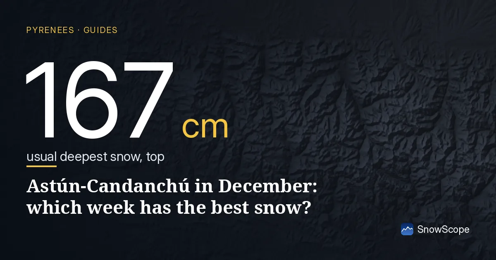

Astún-Candanchú in December: which week has the best snow?
If you are planning a low-cost December family week at Astún-Candanchú in Spain, book 22-28 December and stay on the mid-mountain and upper runs. Early December is often thin at the bottom of the lifts; the last full week of the month gives the best chance of natural snow.
See the live snow forecast for Astún-Candanchú in the SnowScope appSnow depth, powder alerts and the 3D map, free.
Two resorts on one family pass
Astún-Candanchú links two resorts in Spain on one joint pass. The mapped ski area has 35 km of runs and 17 mapped lifts, climbing from 1659 m to 2272 m (613 m vertical). Checked season 26-27 prices are 54.50 EUR online or 59.50 EUR at the ticket office for an adult 1-day joint pass.
No 6-day pass is sold for a family week. Instead, an adult 5-day joint pass bought online for season 26-27 is 237.00 EUR, keeping ticket costs clear before you pick your dates.

Waiting until late December
Our snow history of 46 past winters (1980-81 to 2025-26) shows thin early Decembers at the 1659 m base. The share of past winters with 30 cm or more at the bottom of the lifts is 20 % in 1-7 December, 33 % in 8-14 December, 35 % in 15-21 December, and 41 % in 22-28 December. For 50 cm or more, the base reaches just 9 %, 13 %, 15 %, and 17 % across those four weeks.
Higher up, 22-28 December stands out for families. At mid-mountain (1965 m), 30 cm or more appears in 35 %, 39 %, 46 %, and 63 % of past winters across the four December weeks, while 50 cm or more hits 17 %, 30 %, 28 %, and 37 %. At the 2272 m top, 30 cm or more reaches 52 % in 1-7 December, 57 % in 8-14 December and 15-21 December, and 67 % in 22-28 December (50 cm or more: 24 %, 30 %, 39 %, and 48 %).
On 13 November 2026, today's snow estimate is 0 cm at the base, mid-mountain, and top, with 0 cm of new snow in the next 7 days at the base and mid-mountain and 7 cm at the top. The two-week outlook (13 to 26 November 2026) gives a range of 5 cm to 30 cm above mid-mountain, showing a slow start.
Base, mid-mountain, and top snow
Usual December depths show why height matters. In a usual December, snow averages 18 cm at the base (13 cm on 15 December), 28 cm at mid-mountain (20 cm on 15 December), and 38 cm at the top (29 cm on 15 December). A thin December (1 winter in 10) drops below 2 cm, 5 cm, and 6 cm, and 1989-90 averaged 1 cm at the base and 2 cm higher up.
A deep December (1 winter in 10) rises above 58 cm at the base, 80 cm at mid-mountain, and 104 cm at the top; 2021-22 averaged 85 cm, 114 cm, and 142 cm. Usual lasting snow starts on 7 November (base), 5 November (mid-mountain), and 3 November (top), peaking at 94 cm, 131 cm, and 167 cm.
How it compares with Baqueira Beret
Baqueira Beret in Spain is much larger, with 154 km of mapped runs and 36 mapped lifts from 1504 m to 2600 m (1096 m vertical). For season 2026-27, an adult 1-day 'Baqueira Ticket' is 74,00 € (70,00 € with the rechargeable 'Baqueira Pass' card) and a 6-day 'Baqueira Ticket' is 359,00 €, compared with 54.50 EUR (1-day online) and 237.00 EUR (5-day online) at Astún-Candanchú.
In our snow history, Astún-Candanchú has deeper usual December snow than Baqueira Beret at every level. Baqueira Beret averages 8 cm at its 1504 m base (thin 0 cm, deep above 37 cm), 20 cm at 2052 m (thin below 2 cm, deep above 56 cm), and 30 cm at 2600 m (thin below 3 cm, deep above 77 cm). Its 22-28 December shares for 30 cm or more are 20 % (base), 41 % (mid-mountain), and 59 % (top), below Astún-Candanchú's 41 %, 63 %, and 67 %.
Less December snow in recent winters
When planning ahead, remember that December snow has thinned in recent winters. In the middle of the first 15 winters (1980-81 to 1994-95), Astún-Candanchú averaged 20 cm at the base, 29 cm at mid-mountain, and 39 cm at the top. In the last 15 winters (2011-12 to 2025-26), those numbers fell to 15 cm, 23 cm, and 32 cm, matching last winter's December (2025-26).
Tips for skiers
- Pick 22-28 December for your family week, when mid-mountain reaches 30 cm or more in 63 % of past winters and the top in 67 %.
- Ski mostly at mid-mountain (1965 m) and the top (2272 m), as the 1659 m base averages only 18 cm in a usual December.
- Book the pass on the official site to pay 54.50 EUR for 1 day instead of 59.50 EUR, or 237.00 EUR for 5 days.
- Check the avalanche bulletin before any off-piste turns, especially after new snow on upper slopes.
More maps (external sites)
References and credits
- Astún, official lift pass prices (tarifas 26-27) astun.com/forfaits/
- Baqueira Beret, official prices (tarifas), season 26-27 www.baqueira.es/es/tarifas
- SnowScope, December snow at three heights and today's snow map snowscope.app/
About these numbers
Snow numbers: SnowScope snow history, 46 past winters (1980-81 to 2025-26) at three heights of each resort (a model of the past corrected for height: an estimate for an area, not resort measurements); December figures computed from the daily depths of those winters. Snow now and the two-week outlook: SnowScope forecasts (outlook from ECMWF and GFS, a range, not a promise). Lifts and runs: OpenSkiMap mapping. Prices: the official resort pages listed below, read on 2026-11-13; prices can change, check before booking.
Official avalanche bulletins: AEMET – Boletín de peligro de aludes (Pirineo aragonés)
Cite this report
For research, teaching or the press: the numbers and charts are free to reuse under CC BY 4.0 with this citation.
SnowScope (2026), Astún-Candanchú in December: which week has the best snow?, https://snowscope.app/blog/en/2026/11/astun-candanchu-december-ski-joint-pass-snow-2026.html, accessed 2026-11-14
SnowScope (Atlas Labs). (2026, November 14). Astún-Candanchú in December: which week has the best snow?. SnowScope snow reports. https://snowscope.app/blog/en/2026/11/astun-candanchu-december-ski-joint-pass-snow-2026.html
BibTeX
@misc{snowscope2026astuncandanchudecembersk,
author = {{SnowScope (Atlas Labs)}},
title = {Astún-Candanchú in December: which week has the best snow?},
year = {2026},
month = nov,
howpublished = {\url{https://snowscope.app/blog/en/2026/11/astun-candanchu-december-ski-joint-pass-snow-2026.html}},
note = {Published 2026-11-14 14:41 UTC; accessed 2026-11-14}
}· CC BY 4.0 · Methods, data and tools →
Astún-Candanchú: snow and temperature by height, this winter vs last (tools) →
Follow Astún-Candanchú
Free: a message when fresh snow is coming, and the forecast every morning.
More snow reports

Freezing level reaches 3590 m across the Pyrenees on 9 November, bringing rain-on-snow to thin upper slopes. Pack waterproof layers and gaiters.

Fewer snow days at all 120 points we studied in the Pyrenees since 1980-81, most below 1,500 m: our 46-winter record and the research behind it.

Piau-Engaly leads the forecast with 37 cm of new snow by 13 November; 24 cm is expected on 12 November.